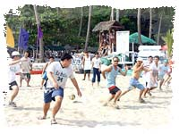
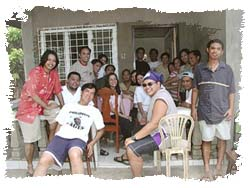

| ITC Annual
Summer Outing 2004 : Nasugbu, Batangas
Big
Outing, Munting Buhangin
by: Harold
Paulo D. Bautista
The
sun was suddenly radiating a more than generous amount of
heat. Foreigners would think that the sun is angry and is
punishing the Philippines. Air conditioners were turned up
several notches. Splash Island was open again. People were
flocking the swimming pools and beaches. Brian was complaining
more than usual about the temperature settings of the aircon
in the office. Ah, it must be summer time again!
As usual, the new bloods of ITC got the Herculean task of organizing this year's ITC outing.
After several trials, errors, bad encounters, and tribulations, success finally came to them
in the form of a resort in a tiny strip of beach along the tip of Nasugbu, Batangas.
Munting Buhangin was the site of this year's ITC Outing.
ITPs from all walks in the office, together with their significant
others and kids, came, saw, and conquered the resort.
Instead of the traditional bus, two coasters were rented to bring the battle-weary ITPs to
Munting Buhangin for some much-needed R&R. The first coaster left DLSU early to fetch the
ITPs waiting at the Alabang interchange. The other coaster left DLSU a little later, and arrived
at the resort about an hour after the first coaster. Breakfast was served during the trip.
The first activity was sizing up the beach. There were ITPs
looking at the ocean, ITPs admiring the scenery, ITPs admiring
the "scenery", ITPs checking out how hot the rays of the sun
were, ITPs putting on sunblock, ITPs catching some more zzz's,
and ITPs finally changing to their swimming attire.
At
the height of the day's sun, lunch was served. It was buffet
style, but the ITPs quickly turned it into a no-contest bout.
Merienda was another matter, as it was served only a few hours
after lunch. The tourists were still full, so the fight was
pretty much equal.
The
day's activities would not be complete without the games:
tug-of-war and touch ball. The team of Brian beat the team
of Ryan for the tug-of-war diadem, and Irwin showed us that
he eats touch ball for breakfast when he was a kid. In the
afternoon, shots were also fired, but this came in shot glass
bouts with Mr. Gordon and Ms. Lime.
Satisfied, almost half of the ITP contingent left for home that day on one of the coasters.
The other coaster stayed on for the other half who stayed on to do further remunerations for
work-related stress.
For
those who stayed, accommodations were one big airconditioned
room, two fan rooms, and one beach sun shade. As far as food
is concerned, they were left to their own devices. Lloyd and
Joel facilitated the cookout of rice, adobo, and other hodge-podge
food on hand. Birthday (love)birds Ampel and DieuDieu took
care of dessert when they ordered leche flan from the resident
restaurant.
Breakfast was also a cookout, except for the rice which was
ordered from the restaurant. After breakfast, a few more swimming
sessions, shower, and it's off to Manila. As an added treat,
lunch was at the house of Dexter's aunt, who so generously
served enough provisions to satisfy even the biggest appetites
of the contingent.
Manila is here. Batangas is there. Summer is over. A new
school year is here. The natives are back in the office, but
all looking forward to next year's summer escapade.
See more photos >>>
|